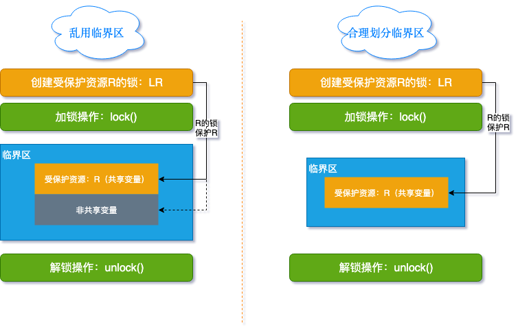
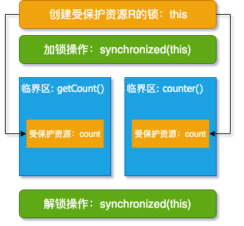
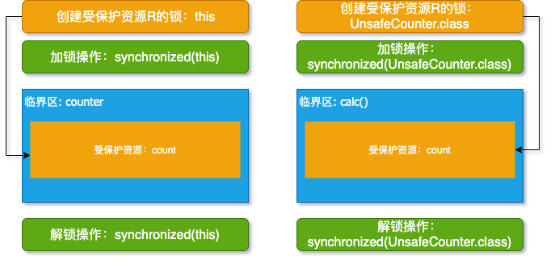

原文连接:https://www.cnblogs.com/FraserYu/p/11570380.html
上一篇文章 可见性有序性，Happens-before来搞定，解决了并发三大问题中的两个，今天我们就聊聊如何解决原子性问题
原子性问题的源头就是 线程切换，但在多核 CPU 的大背景下，不允许线程切换是不可能的，正所谓「魔高一尺，道高一丈」，新规矩来了:
互斥: 同一时刻只有一个线程执行
实际上，上面这句话的意思是: 对共享变量的修改是互斥的，也就是说线程 A 修改共享变量时其他线程不能修改，这就不存在操作被打断的问题了，那么如何实现互斥呢？
锁
对并发有所了解的小伙伴马上就能想到 锁 这个概念，并且你的第一反应很可能就是使用 synchronized，这里列出来你常见的 synchronized 的三种用法:
public class ThreeSync {
private static final Object object = new Object();
public synchronized void normalSyncMethod(){
//临界区
}
public static synchronized void staticSyncMethod(){
//临界区
}
public void syncBlockMethod(){
synchronized (object){
//临界区
}
}
}三种 synchronized 锁的内容有一些差别:
- 对于普通同步方法，锁的是当前实例对象，通常指 this
- 对于静态同步方法，锁的是当前类的 Class 对象，如 ThreeSync.class
- 对于同步方法块，锁的是 synchronized 括号内的对象
我特意在三种 synchronized 代码里面添加了「临界区」字样的注释，那什么是临界区呢？
临界区: 我们把需要互斥执行的代码看成为临界区
说到这里，和大家串的知识都是表层认知，如何用锁保护有效的临界区才是关键，这直接关系到你是否会写出并发的 bug，了解过本章内容后，你会发现无论是隐式锁/内置锁 (synchronized) 还是显示锁 (Lock) 的使用都是在找寻这种关系，关系对了，一切就对了，且看
上面锁的三种方式都可以用下图来表达:
线程进入临界区之前，尝试加锁 lock()， 加锁成功，则进入临界区(对共享变量进行修改)，持有锁的线程执行完临界区代码后，执行 unlock()，释放锁。针对这个模型，大家经常用抢占厕所坑位来形容:
在学习 Java 早期我就是这样记忆与理解锁的，但落实到代码上，我们很容易忽略两点:
- 我们锁的是什么？
- 我们保护的又是什么？
将这两句话联合起来就是你的锁能否对临界区的资源起到保护的作用？所以我们要将上面的模型进一步细化

现实中，我们都知道自己的锁来锁自己需要保护的东西 ，这句话翻译成你的行动语言之后你已经明确知道了:
- 你锁的是什么
- 你保护的资源是什么
CPU 可不像我们大脑这么智能，我们要明确说明我们锁的是什么，我们要保护的资源是什么，它才会用锁保护我们想要保护的资源(共享变量)
拿上图来说，资源 R (共享变量) 就是我们要保护的资源，所以我们就要创建资源 R 的锁来保护资源 R，细心的朋友可能发现上图几个问题:
LR 和 R 之间有明确的指向关系
我们编写程序时，往往脑子中的模型是对的，但是忽略了这个指向关系，导致自己的锁不能起到保护资源 R 的作用(用别人家的锁保护自己家的东西或用自己家的锁保护别人家的东西)，最终引发并发 bug，所以在你勾画草图时，要明确找到这个关系
左图 LR 虚线指向了非共享变量
我们写程序的时候很容易这么做，不确定哪个是要保护的资源，直接大杂烩，用 LR 将要保护的资源 R 和没必要保护的非共享变量一起保护起来了，举两个例子来说你就明白这么做的坏处了
- 编写串行程序时，是不建议 try...catch 整个方法的，这样如果出现问是很难定位的，道理一样，我们要用锁精确的锁住我们要保护的资源就够了，其他无意义的资源是不要锁的
- 锁保护的东西越多，临界区就越大，一个线程从走入临界区到走出临界区的时间就越长，这就让其他线程等待的时间越久，这样并发的效率就有所下降，其实这是涉及到锁粒度的问题，后续也都会做相关说明
作为程序猿还是简单拿代码说明一下心里比较踏实，且看:
public class ValidLock {
private static final Object object = new Object();
private int count;
public synchronized void badSync(){
//其他与共享变量count无关的业务逻辑
count++;
}
public void goodSync(){
//其他与共享变量count无关的业务逻辑
synchronized (object){
count++;
}
}
}这里并不是说 synchronized 放在方法上不好，只是提醒大家用合适的锁的粒度才会更高效
在计数器程序例子中，我们会经常这么写:
public class SafeCounter {
private int count;
public synchronized void counter(){
count++;
}
public synchronized int getCount(){
return count;
}
}下图就是上面程序的模型展示:

这里我们锁的是 this，可以保护 this.count。但有些同学认为 getCount 方法没必要加 synchronized 关键字，因为是读的操作，不会对共享变量做修改，如果不加上 synchronized 关键字，就违背了我们上一篇文章 happens-before 规则中的监视器锁规则:
对一个锁的解锁 happens-before 于随后对这个锁的加锁
也就是说对 count 的写很可能对 count 的读不可见，也就导致脏读
上面我们看到一个 this 锁是可以保护多个资源的，那用多个不同的锁保护一个资源可以吗？来看一段程序:
public class UnsafeCounter {
private static int count;
public synchronized void counter(){
count++;
}
public static synchronized int calc(){
return count++;
}
}睁大眼睛仔细看，一个锁的是 this，一个锁的是 UnsafeCounter.class, 他们都想保护共享变量 count，你觉得如何？下图就是行面程序的模型展示:

两个临界区是用两个不同的锁来保护的，所以临界区没有互斥关系，也就不能保护 count，所以这样加锁是无意义的
总结
- 解决原子性问题，就是要互斥，就是要保证中间状态对外不可见
- 锁是解决原子性问题的关键，明确知道我们锁的是什么，要保护的资源是什么，更重要的要知道你的锁能否保护这个受保护的资源(图中的箭头指向)
- 有效的临界区是一个入口和一个出口，多个临界区保护一个资源，也就是一个资源有多个并行的入口和多个出口，这就没有起到互斥的保护作用，临界区形同虚设
- 锁自己家门能保护资源就没必要锁整个小区，如果锁了整个小区，这严重影响其他业主的活动(锁粒度的问题)
本文以 synchronized 锁举例来说明如何解决原子性问题，主要是帮助大家建立宏观的理念，用于解决原子性问题，这样后续你看到无论什么锁，只要脑海中回想起本节说明的模型，你会发现都是换汤不换药，学习起来就非常轻松了.
到这里并发的三大问题 有序性，可见性，原子性都有了解决方案，这是远看并发，让大家有了宏观的概念；但面试和实战都是讲求细节的，接下来我们由远及近，逐步看并发的细节，顺带说明那些面试官经常会问到的问题
灵魂追问
- 多个锁锁一个资源一定会有问题吗？
- 什么时候需要锁小区，而不能锁某一户呢？
- 银行转账，两人互转和别人给自己转，用什么样的锁粒度合适呢？
提高效率工具

推荐阅读
- 这次走进并发的世界，请不要错过
- 学并发编程，透彻理解这三个核心是关键
- 并发Bug之源有三，请睁大眼睛看清它们
- 可见性有序性，Happens-before来搞定
- 基础面试，为什么面试官总喜欢问String？
欢迎持续关注公众号：「日拱一兵」
- 前沿 Java 技术干货分享
- 高效工具汇总 | 回复「工具」
- 面试问题分析与解答
- 技术资料领取 | 回复「资料」
以读侦探小说思维轻松趣味学习 Java 技术栈相关知识，本着将复杂问题简单化，抽象问题具体化和图形化原则逐步分解技术问题，技术持续更新，请持续关注......